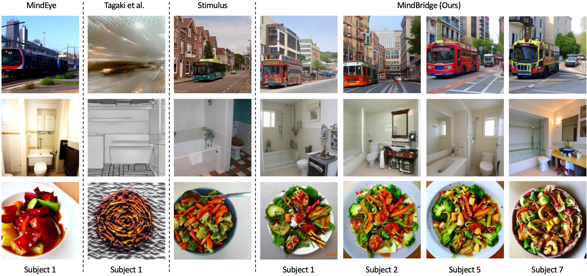

Brain decoding, a pivotal field in neuroscience, aims to reconstruct stimuli from acquired brain signals, primarily utilizing functional magnetic resonance imaging (fMRI). Currently, brain decoding is confined to a per-subject-per-model paradigm, limiting its applicability to the same individual for whom the decoding model is trained. This constraint stems from three key challenges: 1) the inherent variability in input dimensions across subjects due to differences in brain size; 2) the unique intrinsic neural patterns, influencing how different individuals perceive and process sensory information; 3) limited data availability for new subjects in real-world scenarios hampers the performance of decoding models.
In this paper, we present a novel approach, MindBridge, that achieves cross-subject brain decoding by employing only one model. Our proposed framework establishes a generic paradigm capable of addressing these challenges by introducing biological-inspired aggregation function and novel cyclic fMRI reconstruction mechanism for subject-invariant representation learning. Notably, by cycle reconstruction of fMRI, MindBridge can enable novel fMRI synthesis, which also can serve as pseudo data augmentation. Within the framework, we also devise a novel reset-tuning method for adapting a pretrained model to a new subject.
Experimental results demonstrate MindBridge's ability to reconstruct images for multiple subjects, which is competitive with dedicated subject-specific models. Furthermore, with limited data for a new subject, we achieve a high level of decoding accuracy, surpassing that of subject-specific models. This advancement in cross-subject brain decoding suggests promising directions for wider applications in neuroscience and indicates potential for more efficient utilization of limited fMRI data in real-world scenarios.
MindBridge first adaptively unifies the fMRI voxels \(V_s\) to a unified size \(v_s=f(V_s)\) using a biologically-inspired aggregation function \(f\). Then MindBridge projects different subjects' aggregated fMRI voxels \(v_s\) to an intermediate semantic embedding \(e_s=\mathcal{E}_s(v_s)\) using a subject-wise brain embedder \(\mathcal{E}_s\). To ensure that semantic embeddings from different subjects reside in a common shared space, we propose a novel cyclic fMRI reconstruction mechanism. This mechanism relies on an additional subject-wise brain builder \(\mathcal{B}_s\) to reconstruct the unified fMRI voxels \(\hat{v}_s=\mathcal{B}_s(e_s)\). Once the semantic embeddings are obtained, a brain translator \(\mathcal{T}\) translates them into two embeddings, \((\hat{e}_I, \hat{e}_T)=\mathcal{T}(e_s)\), representing the predicted CLIP image and text embeddings, which are utilized to reconstruct images through versatile diffusion model.
Visual comparison results of brain decoding with only one model. Unlike previous methods, which confine one model to a specific subject, our proposed cross-subject brain decoding framework, MindBridge, can reconstruct images from multiple subjects using just one model.
Novel fMRI Synthesis results. The fMRI signals from subjects 5 and 2 are transformed into those of subject 1 through cycle reconstruction. Subsequently, subject 1's brain embeddings are employed for brain decoding, while maintaining the original semantic content of the stimuli.

Refer to the pdf paper linked above for more details on qualitative, quantitative, and ablation studies.
@inproceedings{wang2024mindbridge,
author = {Shizun Wang, Songhua Liu, Zhenxiong Tan, Xinchao Wang},
title = {MindBridge: A Cross-Subject Brain Decoding Framework},
booktitle = {Proceedings of the IEEE/CVF Conference on Computer Vision and Pattern Recognition},
year = {2024}
}